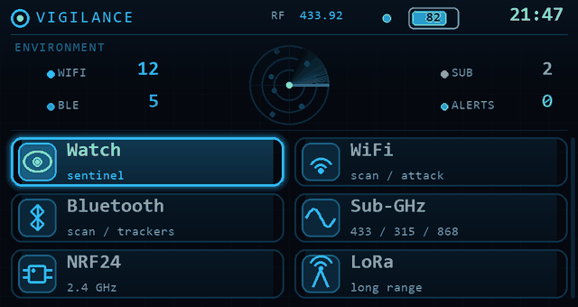

A defensive surveillance HUD firmware for the LilyGo T-Embed CC1101 Plus. Spot hidden cameras, catch trackers tailing you, and watch the RF around you, on a pocket device.

Web Serial works in Chrome / Edge / Brave / Opera on desktop only.
A real framebuffer interface with anti-aliased graphics: a live-radar home screen, restyled menus, a lock-on boot, and a standby scene. Not a debug console.
It leads with finding surveillance: hidden cameras, trackers following you, tails across RF zones, deauth attacks. Protection, not just probing.
A sentinel eye that reacts to the threat level, an ambient LED pulse, and a screensaver, all retintable through built-in themes. It reads like a product.
Every RF, wireless and hardware tool from Bruce and the Sor3nt merge is still here. Vigilance changes the experience, not the capability.
Vigilance is a fork of Bruce (AGPL-3.0) by pr3y and its contributors, which provides the core wireless and RF toolbox. It also carries a merge of work from Sor3nt, adding extra Sub-GHz / Flipper-style protocol support. On top of that base, Vigilance adds its own Sentinel HUD and a defensive-surveillance feature suite, and rethemes the whole device. If Vigilance is useful to you, please star and support the upstream Bruce project too.
Vigilance can coordinate several units over ESP-NOW. The watch is the master; cheap
ESP32-C3 boards (a couple of euros each) run a lightweight satellite firmware and extend your
coverage. Each node scans, listens or measures on command and reports back, so you watch more ground
at once. Flash one with the Flash a satellite button above, or build it from the
satellite/ folder in the repo.
Vigilance can transmit and probe radio and network protocols. Use it only on hardware, networks and radios you own or are authorised to test. You are responsible for how you use it.